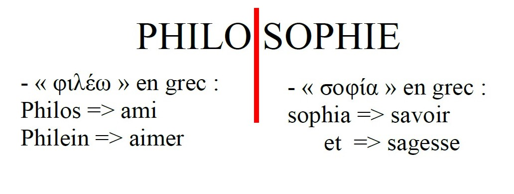
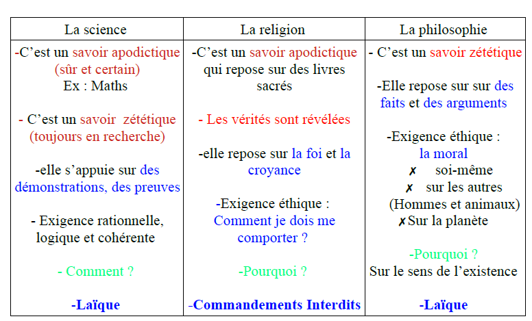
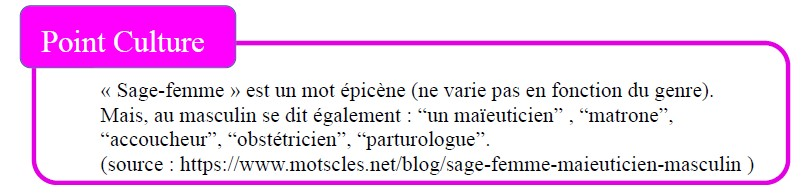

La philosophie est donc l'amour de la sagesse et du savoir. Le philosophe les désire, les recherche, parce qu'il ne les possède pas.
Le Sage (≠ philosophe) incarne ses idées, c'est un savoir pratique, en acte, ses idées servent un idéal du bien qui le dépasse en tant qu'individu.
Le philosophe a plutôt un savoir théorique.
La philosophie est née en Grèce, à Athènes, au IVe siècle avant Jésus-Christ.
L'apparition de la Première démocratie permet la création des débats sur le bien/le mal ; le juste/l'injuste, sur les lois, ainsi naît la philosophie.
La naissance de la philosophie a lieu grâce à une émotion : l'étonnement face :
QU'EST-CE QUE L'HOMME ?
⇒ 4 questions fondamentales de la philosophie, Emmanuel KANT, philosophe allemand du XVIIIe siècle (Les Lumières)
La mort est nécessaire (c-à-d. ce qui ne peut pas ne pas être).
≠ contingent.e (c-à-d. ce qui peut ne pas être)
→ La naissance est contingente.
La mort est inconditionnelle.
(c-à-d. qui arrive sans condition.s, n'importe où, n'importe quand)

La philosophie doit chercher à être :
SOCRATE, né au IVe siècle avant Jésus-Christ à Athènes.
Son père est un tailleur de pierre et un sculpteur.
Sa mère est une sage-femme.

SOCRATE pratique une méthode pour accéder à la vérité, qui procède par questions-réponses : La maïeutique ⇒ il accouche les âmes de la vérité qu'elles possédaient mais qu'elles ont oublié.
La maïeutique repose sur la théorie de la réminiscence (croyance indoeuropéenne) : nos âmes auraient contemplé, dans le monde des Idées (bonheur, vérité, justice, …), toutes les vérités. Mais, au moment où elles s'incarnent, elles oublient tout. Le but de la maïeutique est de retrouver ces Idées oubliées.
SOCRATE a été accusé de 3 chefs d'inculpation (accusation) :
Son ami CHÉRÉPHON s’est rendu à Delphes, au Temple d’Apollon, où exerce une prêtresse nommée la PYTHIE.
Chéréphon demande à la Pythie : « Quel est le plus sage des Hommes ? », La Pythie répond qu’il s’agit de Socrate.
Pour résoudre l’énigme de l’oracle, Socrate se rend sur l'agora (place publique) afin de questionner les personnes qui sont sensées avoir une connaissance sur leur pratique : artisans, poètes, politiciens….
Ce dont Socrate s’aperçoit, c’est qu’elles pensent savoir mais elles ne savent pas. Donc, Socrate est sage en ce qu’il sait, qu’il a conscience qu’il ne sait pas :
« Ce que je sais, c'est que je ne sais pas / rien. »
Socrate était un homme qui ne craignait pas la mort et suivait la justice sans tenir compte des lois instituées par les hommes.
📄 Veuillez trouver la version PDF de ce cours ci-dessous 😇
📥 Télécharger le PDF